Website & Portal v1.3.2
The base template every project here starts from. I led the current version (v1.3.2).
- Liquid
- JavaScript
- HTML5
- CSS3
- GraphQL
- Stripe
Senior Front End Developer
I lead the front end of client-facing web applications, from payments and identity verification to events and subscriptions, turning complex requirements into reliable, well-built interfaces.
Senior Front End Developer with around ten years of experience building and leading the front end of client-facing web applications.
I have been the lead front-end developer on multiple live products spanning payments, identity verification, events, and subscriptions, working primarily in JavaScript, Vue, Liquid, and GraphQL with Stripe, Make.com, and SendGrid integrations, and currently expanding into React and TypeScript.
I am known as the go-to developer for complex, hard-to-reproduce issues. Beyond shipping features, I mentor colleagues, introduce reusable processes, and build internal AI tooling that the wider team now relies on every day.
The Insites platform template and the live products I built on it during my time at Complete Business Online.
The base template every project here starts from. I led the current version (v1.3.2).
The company's first Stripe subscription-webhook implementation, with Make.com-driven Xero and SendGrid automation.
The 54th Congress, Australia 2028. Built the engagement hub, multilingual support, volunteer signup, resources, and signup forms.
Community platform for professional yacht crew. Built key pages on a heavily customised UI and began integrating AI-assisted development.
Criminal background-check platform with Stripe payments and a points-based ID and selfie verification flow.
Events platform with a Make.com automation syncing Xero and SendGrid, plus real-time Slack error alerts.
Job-matching platform with separate Employer and Jobseeker portals, location-based matching, and Stripe payments.
Catalogue architecture and a clean UI for a global dental-implant brand, with Stripe-powered course enrolment.
Self-built, end to end. Where I work outside the client stack, from full-stack apps to AI automations.
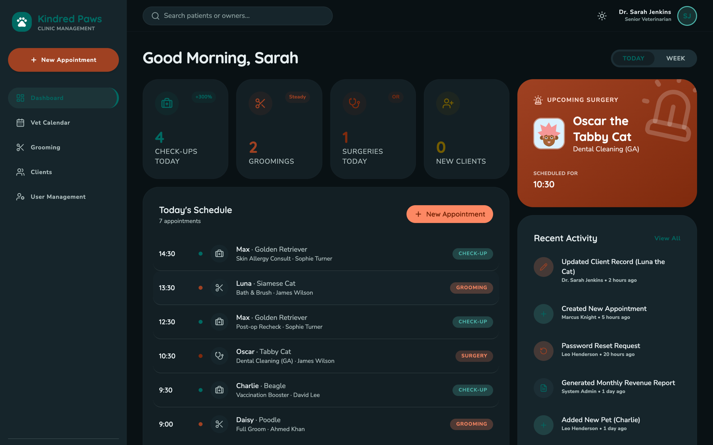
A full-stack veterinary clinic app I designed and built end to end: appointments, a vet calendar, grooming scheduling, client and pet records with medical history, and staff management. A React front end on a custom Tailwind design system, backed by Supabase with a PostgreSQL schema, authentication, and Row Level Security on every table.
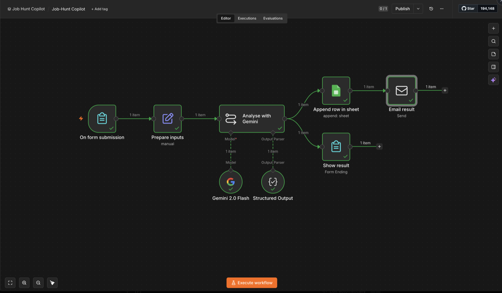
An n8n automation that reads a job posting, scores the real fit against my résumé with AI, and drafts a tailored intro in my voice, then shows it on screen, emails it, and logs every run to a tracker.
A suite of internal automation tools I designed and built on Claude, now used across the team every day. They cut our PR and deployment workflow from around 30 minutes to about 5, and cluster around delivery discipline and visibility: shipping releases safely, verifying quality, and keeping everyone informed.
Generates a structured deployment plan for a release: steps, rollback tag, PR, downtime, and comms.
Gives every developer a consistent, repeatable release process, removing guesswork and reducing deployment mistakes across the team.
Runs the full post-release cleanup: pushes master, aligns the UAT branch, tags the release, updates the deployment calendar, posts the release note, and hands off to support.
Closes the loop on every deployment automatically, keeping release records and project tracking accurate so anyone backtracking a release has a reliable audit trail.
Checks a build against its spec and reports the gaps.
Helps developers and QA catch missed requirements before handover, improving delivery quality and cutting rework.
Turns a project's component markdown into a branded, client-ready document.
Lets any team member produce consistent, well-formatted documentation fast, with no manual formatting.
Reads a task and its full comment thread and produces a structured catch-up summary.
Anyone joining a task gets up to speed in seconds instead of reading every comment, which is especially valuable for a distributed team.
Pulls daily time logs, classifies deliverables vs meetings, captures the logs, and posts an end-of-day or midday standup.
Standardises daily reporting across the team and gives managers visibility on billable vs non-billable time and what shipped each day.
Complete Business Online
Lead front-end developer on client-facing web applications built on a proprietary instance-admin platform. Promoted from Web Developer to Senior in November 2025. Built the team's AI automation toolkit and acts as the trusted point of contact for complex issues.
Coredata Research Inc.
In-house developer focused on LimeSurvey customisation in JavaScript, and maintained the company's WordPress websites across the AU, EU, and US regions.
QQFrance Digital Solutions Inc.
Built reusable template websites for resale using HTML, CSS, JavaScript, Bootstrap, and AngularJS, establishing core front-end fundamentals at the start of a web development career.
Get in touch
If you are building something that needs a dependable senior front-end developer, I would be glad to talk.
chris.ardona@gmail.comWebsite and Portal v1.3.2 is the base template that every project in this showcase is built on. It provides the core website and client-portal foundation, a unified starting point that each project then customises for its own brand, content, and features. I led the current version, refining the shared website and portal foundation the team now builds on.
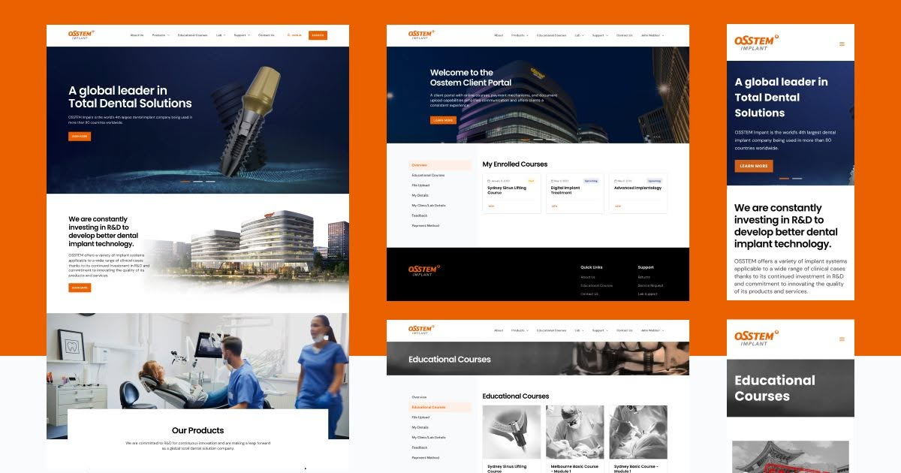
Osstem Implant is the world's 4th largest dental-implant company, used in more than 80 countries, and a leading implant brand out of Korea. For the Australian site I led the front end, building the catalogue architecture, a multi-level menu and submenu system spanning implant systems, surgical kits, and equipment, with a clean, professional UI. I also implemented Stripe payments for the implant-training course enrolment. The product eShop is handled by a third-party provider.
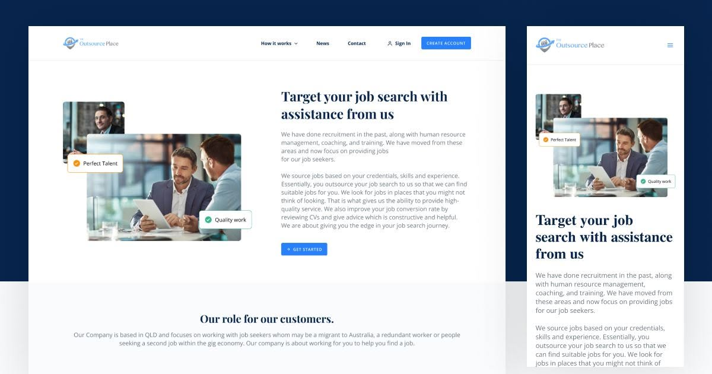
The Outsource Place is a platform where job seekers meet employers. Job seekers get easy access to job listings, personalised recommendations, and tools to support their search, while employers find suitable candidates quickly and efficiently. I led the front end, building two distinct account types, Employer and Jobseeker, each with its own portal view and payment type, plus location-based job matching, with Stripe handling payments.
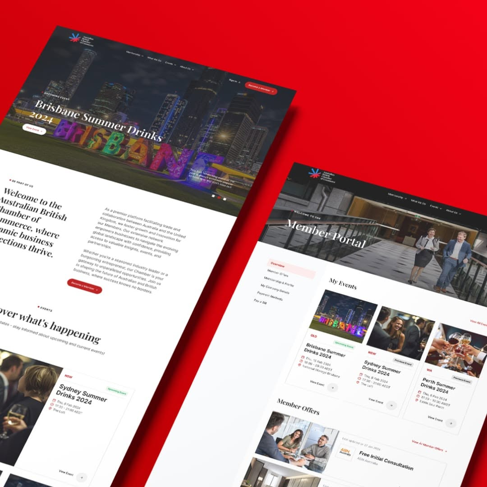
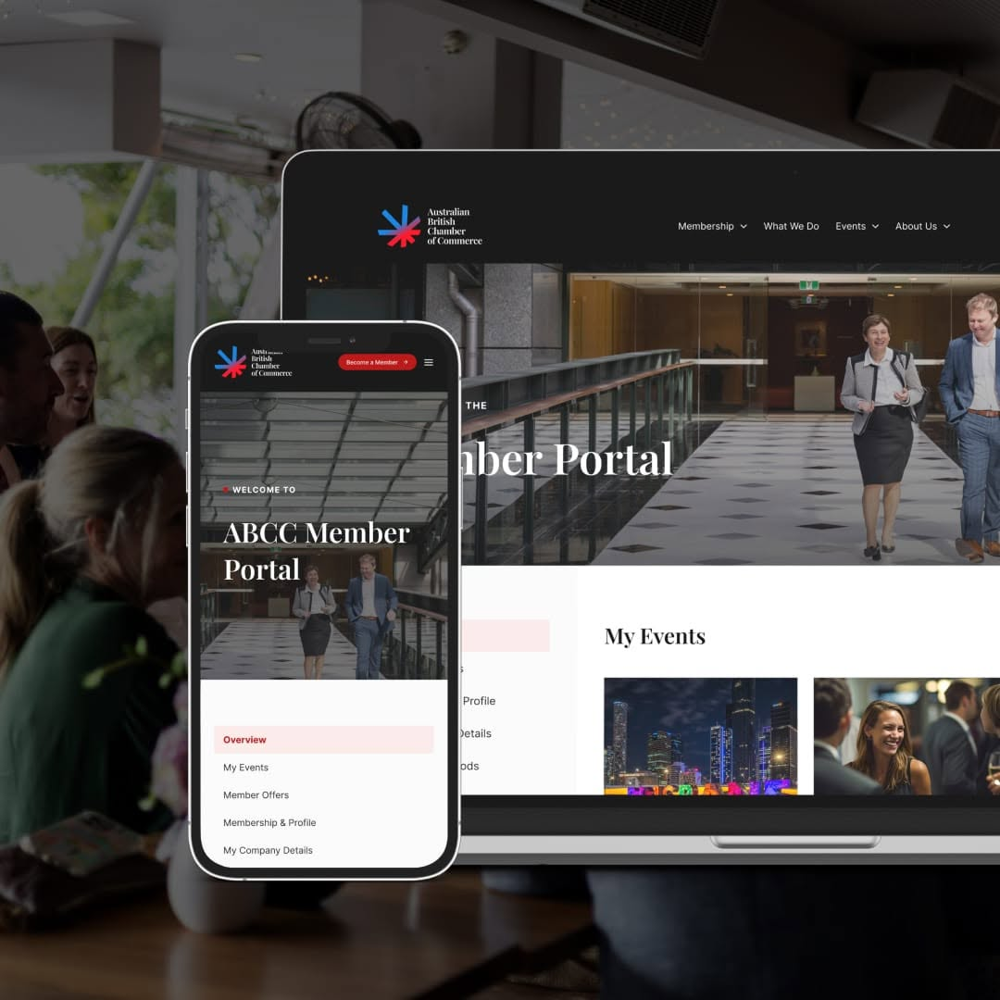
An events platform for the chamber. I led the front end and built a Make.com automation that syncs Xero and SendGrid and surfaces error alerts to Slack in real time, keeping event operations and finance in step.
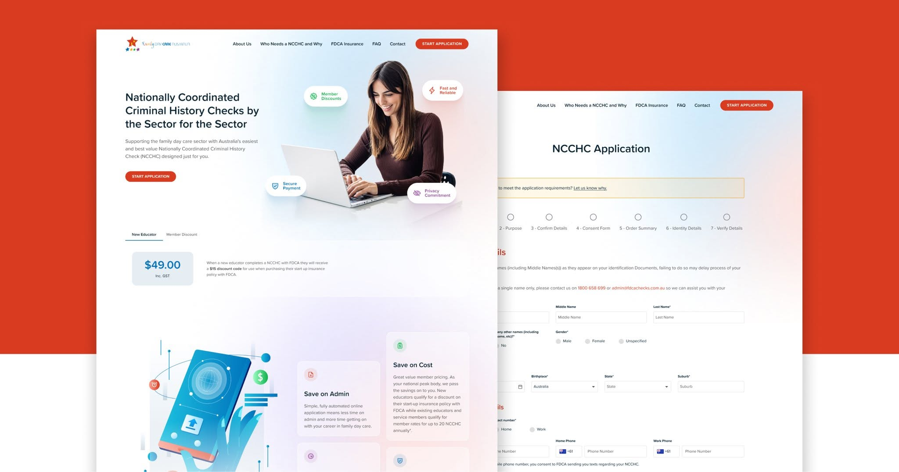
An Australian criminal background-check platform. I led the front end, including Stripe payments and a points-based ID and selfie verification flow, integrating the AWS Rekognition and NSS submission APIs delivered by the backend team, plus complex name-validation logic across legal name, alias, and maiden name.
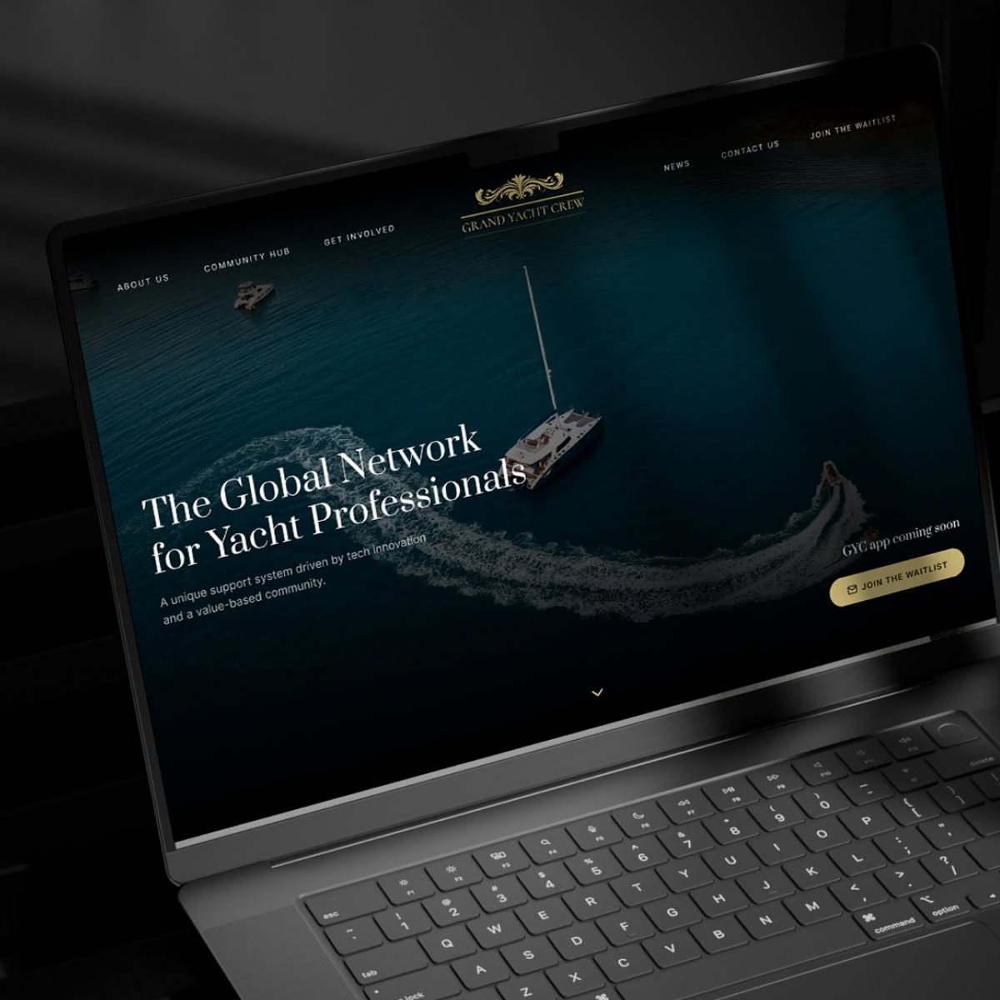
A community platform for professional yacht crew. As a contributor I built several pages, including Contact and the newsletter submissions, working with a UI that diverged well beyond our standard template, and began integrating AI-assisted development into the build. No payments or member portal.
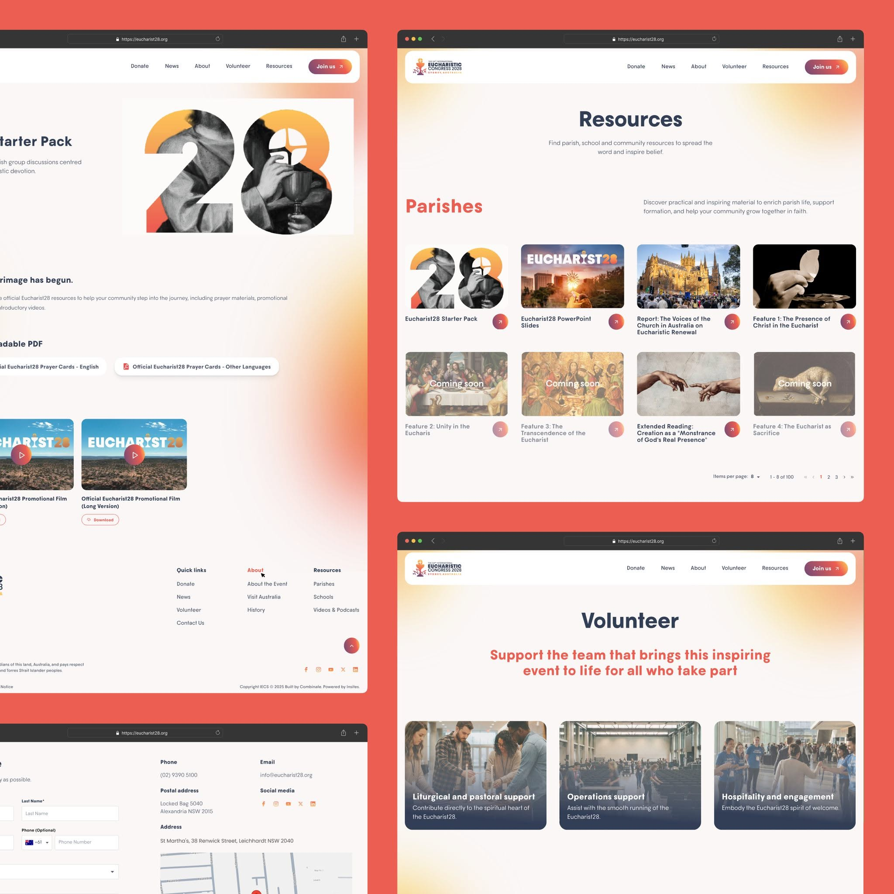
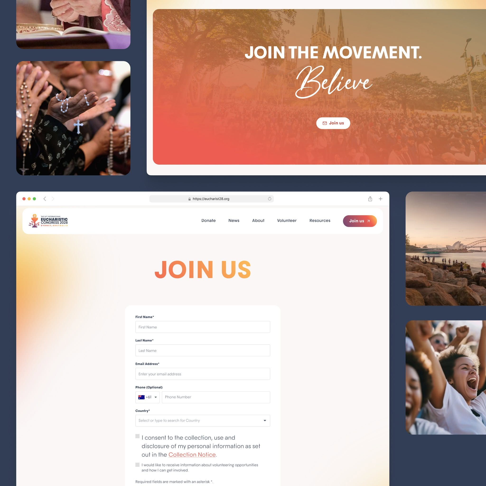
The official site for the 54th International Eucharistic Congress, coming to Australia in 2028. As a contributor I worked on the engagement hub, multilingual support, the volunteer signup, the resources area, and a range of signup forms.
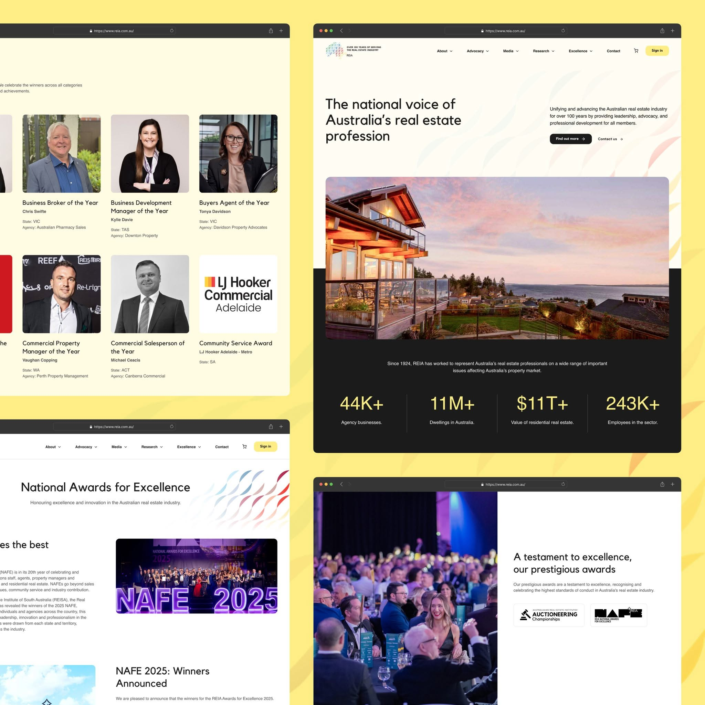
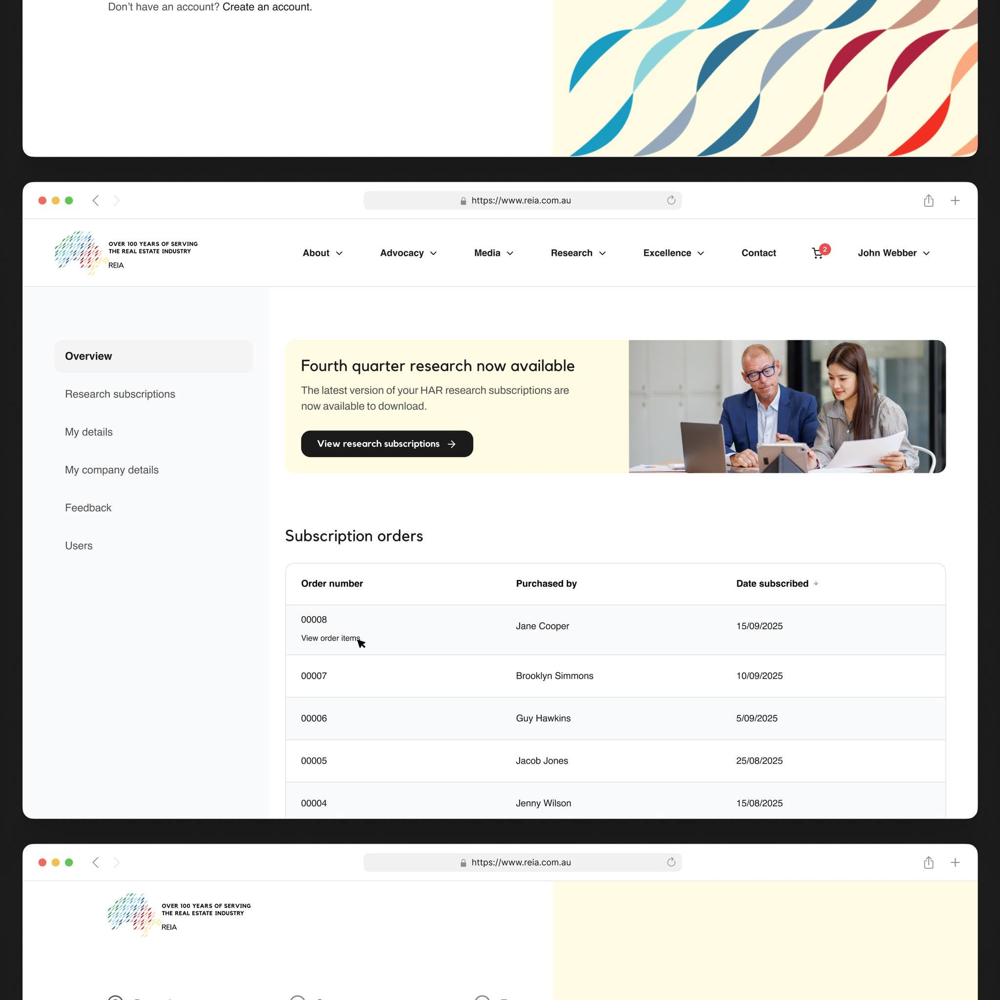
A platform for Australia's peak real estate body. I led the front end and delivered the company's first Stripe subscription-webhook implementation, alongside Make.com-driven Xero and SendGrid updates for a fully automated membership flow. This project features a brand-new portal dashboard for recurring subscriptions, built to make document subscription management easier, faster, and more secure for all users.
A web application for running a veterinary clinic, designed and built end to end on my own. It covers appointment booking, a day, week, and month vet calendar, grooming scheduling, full client and pet records with medical history, staff and user management, and an activity log.
I built the whole stack: a React single-page app with lazy-loaded routes and a custom Tailwind design system on the front end, backed by Supabase with a PostgreSQL schema, email authentication, and Row Level Security protecting every table. The project is open source.
A workflow I built to take the grind out of job hunting. I paste a posting into a form and it returns an honest fit score, a breakdown of strengths and gaps, and a drafted cover-letter intro in my voice, shown on screen, emailed to me, and logged to a tracking sheet.
Built in n8n: a form trigger feeds the posting and my résumé into Google Gemini through a LangChain chain with a structured-output parser, so the model returns clean, typed fields. The result fans out to a completion screen, an SMTP email, and a Google Sheets row. The prompt is tuned to score strictly and write without clichés, real postings come back at 25, 55, and 60 out of 100, not flattering nonsense.